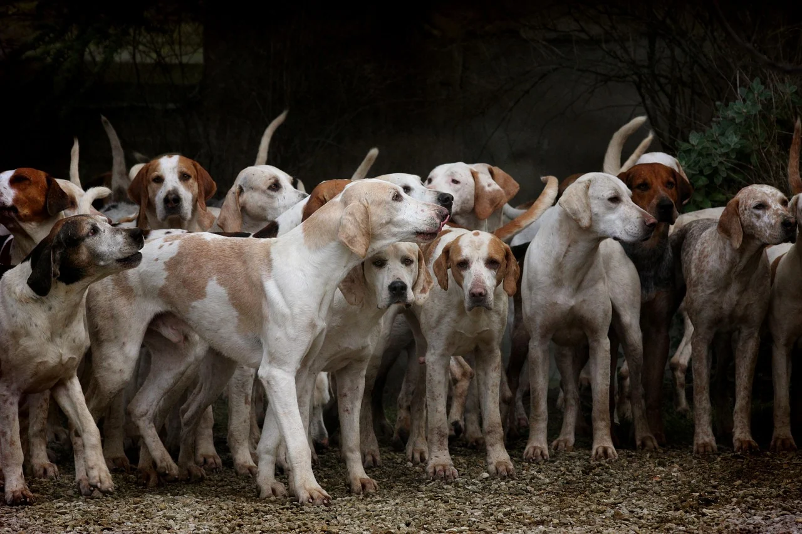

Bir Border Collie 1.022 farklı nesnenin ismini öğrenebiliyor. Bir kurtarma köpeği, metrelerce kar altındaki bir insanı kokusuyla bulabiliyor. Bir rehber köpek, sahibinin kör olduğunu fark edip trafik ışığını beklemeden geçmesini engelleyebiliyor. Ama tüm bu yeteneklerden önce şu soru geliyor: Bu olağanüstü hayvan nasıl ortaya çıktı? Cevap, insanlık tarihinin belki de en uzun ve en derin ortaklığına dayanıyor — onlarca bin yıl önce, bir kurt sürüsü ile bir insan grubunun ateş başında buluştuğu o gizemli ana.
Köpek Nedir? Taksonomi ve Kurt İle İlişki
Köpek bilimsel olarak Canis lupus familiaris adını taşır; yani gri kurdun (Canis lupus) evcil bir alt türüdür. Bu sınıflandırma uzun tartışmalar sonucunda 1993 yılında Uluslararası Zooloji Nomenklatür Komisyonu (ICZN) tarafından resmileştirildi. Bugün köpek ile gri kurt arasındaki genetik mesafe, pek çok coğrafi kurt popülasyonunun birbirleri arasındaki farklılıktan daha küçüktür.
Köpekler, köpekgiller (Canidae) ailesinin Canis cinsine aittir. Bu cins; kurt, çakal, koiot ve dingo gibi türleri kapsar. Tüm evcil köpekler dingo da dahil olmak üzere aynı evcilleşme olayından türemiştir — farklı kıtalarda bağımsız evcilleşme teorisi günümüzde büyük ölçüde reddedilmiştir.
🐕 Köpek Taksonomisi — ICZN, Wilson & Reeder 2005, IUCN 2025
- Alem: Animalia (Hayvanlar)
- Şube: Chordata (Omurgalılar)
- Sınıf: Mammalia (Memeliler)
- Takım: Carnivora (Et yiyenler)
- Aile: Canidae (Köpekgiller) — 36 yaşayan tür
- Cins: Canis
- Tür: Canis lupus (Gri Kurt)
- Alt tür: Canis lupus familiaris (Evcil Köpek)
- IUCN Durumu: Evcilleştirilmiş (domesticated) — tehlike altında değil
- Dünya Nüfusu: ~900 milyon (tahmini, WHo 2024)
- Sahipli köpek: ~470 milyon | Sahipsiz: ~430 milyon
Ne Zaman Evcilleşti? Arkeoloji ve Genetiğin Çelişen Tarihleri
Köpeğin tam olarak ne zaman evcilleştiği, biyoloji tarihinin en tartışmalı sorularından biridir. Fosil kanıtlar ile genetik analizler birbirinden oldukça farklı tarihlere işaret ediyor:
En eski fosil kanıt: 2008'de Belçika'daki Goyet Mağarası'nda bulunan bir kafatası, 31.700 yıl önce yaşamış ve morfolojik olarak köpeğe benzediği belirlendi (Germonpré vd., Journal of Archaeological Science, 2009). Ancak bu bulgu tartışmalı olmaya devam ediyor; bazı araştırmacılar hayvanın evcil değil, "proto-evcil" bir geçiş formu olduğunu öne sürmektedir.
Genetik kanıtlar: 2013'te Science dergisinde yayımlanan kapsamlı bir çalışma (Wang vd.), köpeklerin Güney Doğu Asya'da, yaklaşık 33.000 yıl önce evcilleştiğini öne sürdü. 2016'da yayımlanan başka bir Science makalesi ise (Frantz vd.) Avrupa ya da Asya'da iki ayrı evcilleşme olayı yaşandığını, Avrupa kökenli popülasyonun Asya'dakinden bağımsız geliştiğini savundu. 2021'deki en geniş kapsamlı çalışma (Bergström vd., Science) ise tüm evcil köpeklerin tek bir evcilleşme olayından türediğini ve bunun Orta Asya'da ya da Batı Avrasya'da yaklaşık 15.000-40.000 yıl önce gerçekleştiğini gösterdi.
🕐 Köpek Evcilleşmesinin Kronolojisi
- ~40.000 yıl önce: Kurt soyu içinde köpeğe evrilecek hattın genetik ayrışması başladı (Bergström vd. 2021)
- ~31.700 yıl önce: Goyet Mağarası kafatası — fosil kaydındaki en eski "köpek benzeri" birey (Belçika)
- ~15.000 yıl önce: Kesin evcilleşme kanıtı; Bonn-Oberkassel (Almanya) mezarında insan ile birlikte gömülü köpek iskeleti — dünyada bilinen ilk insan-köpek birliktelik mezarı
- ~14.000 yıl önce: Güney Doğu Asya'da köpek fosil kayıtları (Endonezya, Vietnam)
- ~12.000 yıl önce: Yakın Doğu ve Avrupa'ya yayılım; ilk çiftçilik topluluklarıyla birlikte köpek varlığı belgelendi
- ~10.000 yıl önce: Dingo'nun ataları Güney Doğu Asya'dan Avustralya'ya taşındı (deniz yoluyla)
- ~4.000 yıl önce: Mısır'da yazılı kaynaklarda farklı ırk özelliklerine değinilen ilk belgeler; Gizeli kabartmalar
- 1800'ler: Sistematik ırk geliştirme ve köpek kulüplerinin kurulması; Kennel Club (İngiltere, 1873)
- 1911: FCI (Fédération Cynologique Internationale) kuruldu; bugün 354 ırkı tanıyor
Evcilleşme nasıl başladı? Baskın teoriye göre Paleolitik dönemde bazı kurtlar, insan kamp alanları çevresindeki atık yiyeceklerden beslenmeye başladı. Daha az korku ve saldırganlık gösterenler bu ortamda hayatta kalma avantajı elde etti. Nesilden nesile bu seçilim, birkaç bin yıl içinde insanla barış içinde yaşayabilen, hatta işbirliği yapabilen bir alt grubu ortaya çıkardı. Buna "kendi kendine evcilleşme" (self-domestication) hipotezi denir — Smithsonian'ın 2023 tarihli güncel rehberinde bu teori en güçlü senaryo olarak öne çıkmaktadır.
Kurt'tan Köpeğe: Anatomik ve Genetik Değişimler
Evcilleşme süreci köpeği kurddan yalnızca davranışsal olarak değil, derin fizyolojik ve genetik düzeyde de ayırdı. 2013'te Nature dergisinde yayımlanan ilk kapsamlı köpek genomu analizi (Lindblad-Toh vd.), kurtta bulunmayan ama köpekte işlevsel olan nişasta sindirim genlerini ortaya koydu:
Köpeklerde amilaz (AMY2B) geni kurtlara kıyasla ortalama 7-8 kat fazla kopya sayısına sahip. Bu, köpeklerin tahıl ağırlıklı insan artıklarını sindirebildiğini, kurdun ise buna adapte olmadığını gösterir. Nişasta sindirimindeki bu farklılık, köpeğin tarımsal topluluklarla birlikte evrimleştiğinin en güçlü kanıtıdır.
Bunların yanı sıra köpeklerde aşağıdaki anatomik ve biyolojik farklar belirgin biçimde gelişti:
- Beyin hacmi: Köpek beyni, eşit vücut ağırlığındaki kurda kıyasla yaklaşık %20 daha küçük — evcilleşmenin klasik sonucu (azalan bağımsız karar verme ihtiyacı)
- Dişler: Küçüldü, küçük azı dişleri kısaldı; tahıl bazlı besini parçalamaya elverişli hale geldi
- Kulak morfolojisi: Sarkık kulak birçok ırkta evcilleşmenin işareti; vahşi hayvanların çoğunda dik kulak egemen
- Yavru görünüm (neoteni): Köpekler yetişkin hâlde bile yavru kurt özelliklerini (yuvarlak kafa, büyük gözler, oyuncu davranış) korur
- Gözler: Köpekler alnın iç köşesine yakın ek bir yüz kası (levator anguli oculi medialis, LAOM) geliştirdi — bu kas köpeklere "üzgün göz" ifadesi kazandırıyor ve insanların empati hissetmesini tetikliyor. Kurtlarda bu kas bulunmuyor. (PNAS, Kaminski vd., 2019)
- Oksitosin döngüsü: Köpekler, insanlarla göz teması kurduğunda oksitosini yükseltiyor — bu tepki kurtlarda gözlenmiyor. (Science, Nagasawa vd., 2015)
Dünya Genelinde Kaç Köpek Var? Irk Sayısı ve Sınıflandırma
Dünya Sağlık Örgütü'nün (WHO) 2024 verilerine göre dünyada yaklaşık 900 milyon köpek yaşıyor. Bunun yaklaşık yarısı sahipsiz ya da yarı sahipli durumda. Tanınan ırk sayısına göre en büyük otorite kurumları şunlar:
| Kuruluş | Merkez | Tanınan Irk | Notlar |
|---|---|---|---|
| FCI (Fédération Cynologique Internationale) | Belçika | 354 | Uluslararası çatı kuruluşu; 10 grup, 98 üye ülke |
| AKC (American Kennel Club) | ABD | 200 | 7 grup; en sıkı kayıt standartları |
| KC (The Kennel Club) | İngiltere | 221 | Dünyanın ilk köpek kulübü (1873); 7 grup |
| UKC (United Kennel Club) | ABD | 300+ | Çalışma köpeklerine ve performansa odaklanır |
| VDH (Verband für das Deutsche Hundewesen) | Almanya | 354 | FCI üyesi; Alman ırklarının en güçlü otoritesi |
FCI'nın 10 Grubu: Köpekler Nasıl Sınıflandırılır?
FCI (Fédération Cynologique Internationale), tüm tanınan ırkları işlev ve kökenlerine göre 10 gruba ayırıyor. Bu sınıflandırma köpek dünyasının evrensel haritasıdır:
| Grup | Adı | Temel İşlev | Öne Çıkan Irklar |
|---|---|---|---|
| 1 | Sürü ve Çoban Köpekleri | Sürü yönetimi, koruma | Border Collie, Alman Çoban, Kangal, Malinois |
| 2 | Pinscherler, Schnauzerler, Molosslar | Koruma, bekçilik, çalışma | Rottweiler, Doberman, Boksör, Dogo Argentino |
| 3 | Teriyerler | Av hayvanı yakalama, toprak altı avı | Bull Terrier, Jack Russell, Airedale, Scottish Terrier |
| 4 | Dachshundlar (Daks Köpekleri) | Yer altı ve yüzey avı | Kısa, uzun ve sert tüylü varyantlar |
| 5 | Spitz ve İlkel Tipler | Kuzey çalışma köpekleri, sled, primitif | Husky, Samoyed, Akita, Basenji, Dingo |
| 6 | Tazı Tipi Av Köpekleri (Scent Hounds) | Koku izleme, avı kovalama | Beagle, Bloodhound, Basset Hound, Coonhound |
| 7 | Duraksayan Av Köpekleri (Pointers/Setters) | Kuş avı, işaret etme, yönlendirme | English Pointer, Irish Setter, Braque Français |
| 8 | Retrieverler, Flushing Köpekler, Su Köpekleri | Av getirme, suda çalışma | Labrador, Golden Retriever, Cocker Spaniel, Poodle |
| 9 | Eşlik Köpekleri ve Oyun Köpekleri | Arkadaşlık, sosyal eşlik | Pekingese, Maltese, Chihuahua, Bichon Frisé |
| 10 | Görsel Tazılar (Sighthounds) | Gözle takip, hız avı | Greyhound, Saluki, Whippet, Afghan Hound |
Öne Çıkan Irklar: Kökenleri, Özellikleri ve Rekorları
Border Collie — Dünyanın En Zeki Köpeği
İskoçya-İngiltere sınır bölgesinde (border) koyun otlatmak için geliştirildi. 2022'de Scientific Reports'ta yayımlanan bir çalışmaya göre "Chaser" adlı Border Collie, 1.022 farklı nesnenin ismini öğrendi; bu, şimdiye kadar kaydedilen en geniş hayvan sözcük dağarcığıdır. Güçlü göz temasıyla sürüleri yönetebilir, saatlerce çalışabilir. Yüksek enerji ve zihinsel uyarım ihtiyacı bu ırkı deneyimli sahipler için uygundur.
Alman Çoban Köpeği (German Shepherd) — Çok Amaçlı Dünya Hakimi
1899'da Max von Stephanitz tarafından geliştirildi. Polis, ordu, rehberlik, arama-kurtarma ve terapi alanlarında dünyanın en yaygın kullanılan ırkıdır. Almanya, İngiltere ve ABD'de onlarca yıl boyunca en fazla tescil edilen ırk olmuştur. Akıllı, sadık ve baskın: bu özelliklerin kombinasyonu onu hem aile köpeği hem profesyonel çalışma köpeği yapıyor.
Labrador Retriever — En Popüler Aile Köpeği
Kanada'nın Newfoundland adası kıyı balıkçılarının kullandığı köpeklerden türetildi. AKC kayıtlarına göre 1991-2022 yılları arasında 31 yıl üst üste ABD'nin en popüler ırkı oldu (2022'de French Bulldog tarafından geçildi). Su geçirmez tüyü, yumuşak ağzı (av hayvanını hasarsız taşıma) ve insanlarla kurduğu güçlü bağ onu rehber köpek programlarının birinci tercihi yapıyor.
Kangal — Türkiye'nin Efsanevi Koruyucusu
Anadolu'nun Sivas-Kangal yöresinden çıkan bu ırk, binlerce yıl boyunca sürüleri kurt ve çakala karşı korudu. Ortalama 50-65 kg ağırlık ve 72-81 cm omuz yüksekliğiyle en büyük köpek ırklarından biridir. FCI ve AKC, Kangal ile Anatolian Shepherd'ı aynı ırk olarak tanır. UNESCO, Kangal'ı Türkiye'nin kültürel mirası olarak kabul etmiştir. Zimbabve ve Namibya'da vahşi aslan ve çita saldırılarına karşı çiftçilere destek amacıyla Kangallar kullanılmaktadır.
Greyhound — Dünyanın En Hızlı Köpeği
Kayıtlardaki en yüksek hız: saatte 72 km/s. Karşılaştırma: Usain Bolt'un rekor koşusundaki ortalama hızı ~37 km/s. Greyhound bu hızı 30 metre içinde ulaşabildiği ivmeyle elde eder; uzun mesafede dayanıklı değildir. Antik Mısır mezar kabartmalarında (MÖ 4000) resmedilen en eski ırklardan biridir.
Basenji — Havlamayan Köpek
Orta Afrika'nın Kongo havzasından çıkan Basenji, ses tellerinin yapısı nedeniyle havlamaz; onun yerine "yodel" benzeri bir ses çıkarır. Genetik analizler, Basenji'nin evcil köpekler arasında kurda en yakın genetik yapıyı koruyan ırklardan biri olduğunu göstermiştir (Vilà vd., Science, 1997). Yılda yalnızca bir kez ürer; bu özellik vahşi atalardan gelen bir kalıntıdır.
Köpek Zekası: Bilimin Şaşırtıcı Bulguları
Köpek zekası araştırmaları, 2000'li yıllardan itibaren patlama yaşadı. Önceki varsayım köpeklerin basit koşullanmayla öğrendiğiydi; günümüz çalışmaları çok daha karmaşık bir tablo ortaya koyuyor:
Sosyal Zeka ve "Akıllı Göz"
Köpekler insanlara bakma, el hareketlerini takip etme ve işaret parmağının yönünü anlama konularında kurtlardan ve şempanzelerden üstündür. Science dergisinde 2002'de yayımlanan Hare ve Tomasello çalışması bunu ilk kapsamlı olarak ortaya koydu. Köpekler işaret edilen nesneye yönelirken, genetik olarak daha yakın akrabaları kurtlar ve şempanzeler bu ipucunu kullanamazlar. Bu, köpekte sosyal referans adı verilen bir bilişsel yeteneğin özel olarak evrimleştiğini gösteriyor.
Duygu Okuma
2016'da Royal Society Open Science'da yayımlanan bir çalışma (Albuquerque vd.), köpeklerin insan yüzündeki mutlu ve kızgın ifadeyi güvenilir biçimde ayırt edebildiğini kanıtladı. Dahası, insan sesindeki duygusal tonu ve bağlamı birleştirerek değerlendiriyorlar — bu bütünleşik duygusal işleme daha önce yalnızca insanlarda gözlemlenmişti.
Bireysel Farklılıklar ve "Dahiler"
Budapeşte'deki ELTE Üniversitesi'nin 2021 tarihli araştırması (Fugazza vd., Scientific Reports), köpeklerin yalnızca küçük bir kısmının — "dahiler" olarak adlandırılan yaklaşık %1'lik kesim — birden fazla nesnenin ismini öğrenebildiğini ortaya koydu. Bu "deha" özelliği belirli ırklarda (özellikle Border Collie ve Golden Retriever'da) daha sık görülüyor; ancak eğitimine değil, doğuştan gelen kapasitenin açığa çıkarılmasına bağlı.
Çalışan Köpekler: İnsanlığa Hizmetin Boyutları
Günümüzde köpekler salt arkadaşlık işlevinin çok ötesinde görevler üstleniyor. Aşağıda belgelenmiş çalışma alanları verilmiştir:
👷 Çalışan Köpek Kategorileri — AKC, FEMA, WHO 2024
- Polis ve Güvenlik (K9): Uyuşturucu, patlayıcı ve insan kokusu tespiti; saldırı ve yakalama. ABD'de aktif ~50.000 K9 köpeği
- Rehber Köpekler: Görme engelli bireyler için navigasyon. Dünyada aktif ~10.000 rehber köpek (Guide Dogs for the Blind, 2024)
- Arama-Kurtarma (SAR): Deprem, çığ ve kaybolma olaylarında mağdur bulma. 2023 Türkiye depremlerinde yüzlerce SAR köpeği görev aldı
- Tıbbi Uyarı Köpekleri: Epilepsi nöbet öncesi uyarı, hipoglisemi (kan şekeri düşüşü) tespiti, alerjen tespiti
- Kanser Tespiti: Eğitimli köpekler, nefes ve idrar örneklerinden akciğer kanserini %97 doğrulukla tespit edebildi (Integrative Cancer Therapies, 2019)
- Kovid-19 Tespiti: 2020-2022 döneminde Fransa, Finlandiya ve BAE, eğitimli köpeklerle havalimanı taramalarında %94 doğruluk elde etti
- Terapi Köpekleri: Hastane, bakım evi ve okullarda psikolojik destek
- Kızak Köpekleri: Arktik bölgelerde ulaşım; hâlâ Alaska ve Sibirya'da aktif olarak kullanılıyor
- Çoban Köpekleri: Küresel olarak ~5 milyon aktif çalışan çoban köpeği (FAO tahmini)
Köpek ve İnsan: Biyolojik Ortak Evrim
İnsan-köpek ilişkisi o kadar uzun ve derin ki, iki tür birbirinin fizyolojisini dönüştürdü. 2015'te Science dergisinde yayımlanan Nagasawa ve ekibinin çalışması, insanlarla göz teması kuran köpeklerde oksitosin ("bağlanma hormonu") düzeyinin %130 arttığını ortaya koydu. Aynı anda köpeğe bakan insanlarda da oksitosin artışı gözlemlendi. Bu döngüsel hormon serbest bırakma mekanizması, ebeveyn-çocuk bağlanmasında çalışan mekanizmanın ta kendisi; vahşi hayvanlarla insanlar arasında daha önce hiç gözlemlenmemişti.
Araştırmacılar bunu "neşenin evrimsel kaçırılması" olarak adlandırıyor: Köpekler, bebeğe bakan bir ebeveynin evrimsel tepkisini insanlarda tetikleyerek kendilerine bakım sağlıyorlar. Ve bu bir manipülasyon değil; her iki tarafın da biyolojik kazanç elde ettiği gerçek bir ortak evrim ürünü.
Köpek Sahipliğinin Sağlığa Etkisi
2019'da Circulation: Cardiovascular Quality and Outcomes'da yayımlanan 70'ten fazla çalışmanın meta-analizi, köpek sahibi olmanın kardiyovasküler ölüm riskini %24 oranında azalttığını buldu. Tek başına yaşayanlar için bu oran daha da yüksek: kalp krizinden sonra köpek sahibi olan bireylerin sağkalım oranı, köpeksizlere kıyasla anlamlı biçimde daha iyi.
Dünyanın Sahipsiz Köpek Krizi
WHO'nun tahminlerine göre dünyada yaklaşık 430 milyon sahipsiz köpek bulunuyor. Bu devasa nüfus birkaç ciddi sorunu beraberinde getiriyor:
- Kuduz: Yılda ~59.000 insan ölümüne yol açan kuduzun %99'u köpek ısırığından kaynaklanıyor (WHO, 2023). Afrika ve Asya en çok etkilenen bölgeler
- Ekolojik baskı: Sahipsiz köpekler, özellikle ada ekosistemleri ve küçük memeli popülasyonları üzerinde yıkıcı bir av baskısı oluşturuyor (IUCN)
- Türkiye: 2024 Temmuz verilerine göre ülkede tahminen 4-10 milyon sahipsiz köpek bulunuyor; yasa koyucular ve hayvan koruma kuruluşları arasındaki gerilim sürmektedir
- Çözüm yaklaşımları: TNVR (Tuzak-Nötr Etme-Aşılama-Serbest Bırakma) programları; Hindistan, Türkiye ve bazı AB ülkelerinde uygulanıyor
Rekorlar ve Olağandışı Özellikler
🏆 Köpek Dünyasının Rekorları — Guinness World Records 2025, AKC
- En büyük ırk: Great Dane (Büyük Danimarkalı) — rekor boyutlu bireyler 1,04 m omuz yüksekliğine ulaştı; "Zeus" (2022) 1,046 m ile rekor kırdı
- En küçük ırk: Chihuahua — "Miracle Milly" (2013) 9,65 cm yükseklik, 453 gram ağırlıkla kayıtlı en küçük köpek
- En uzun yaşayan köpek: Bluey adlı Avustralya Sığır Köpeği, 29 yıl 5 ay yaşadı (1910-1939); teyit edilmiş en uzun ömür
- En uzun kulak: Bloodhound ırkında 34,9 cm uzunluğunda kulak kayıtlara geçti
- En hızlı ırk: Greyhound — 72 km/s (kayıtlı maksimum)
- En güçlü ısırık: Kangal — yaklaşık 743 PSI (pound per square inch); köpek ırkları arasında en yüksek
- En güçlü koku duyusu: Bloodhound — insan burnünden 1.000-10.000 kat daha duyarlı; 300 saatlik ize ait kokuyu takip edebildiği belgelenmiştir
Genetik Çeşitlilik ve Irk Hastalıklarının Faturası
Modern ırk geliştirme pratiği, köpeklere olağanüstü çeşitlilik kazandırdı; ancak bu süreç ciddi genetik maliyetler doğurdu. Kapalı ırk gen havuzları ve aşırı seçimci üretim, pek çok ırkta kalıtsal hastalıkları yaygınlaştırdı:
- Brakisefali (basık yüz sendromu): Bulldog, French Bulldog ve Pug gibi ırklarda solunum güçlüğü, aşırı ısınma ve uyku apnesi
- Kalça displazisi: Büyük ırklarda (Alman Çoban, Labrador, Golden Retriever) en yaygın ortopedik sorun; OFA 2024 verilerine göre bazı ırklarda yaygınlık %50'yi aşıyor
- Koloboma ve MDR1 mutasyonu: Collie ırklarında ilaç duyarlılığı mutasyonu, birçok veteriner ilacını tehlikeli kılıyor
- Dermoid sinüs: Rhodesian Ridgeback'te görülen genetik omurga kanalı defekti
Bu sorunlara yanıt olarak "tasarımcı melezler" (designer hybrids) popülerleşti: Labradoodle (Labrador + Poodle), Goldendoodle (Golden + Poodle), Cockapoo (Cocker + Poodle). Teorik olarak melezleme, ırka özgü genetik hastalıkları azaltıyor (heterosis/hibrit canlılığı). Ancak eleştirmenler, bu melezlerin tutarsız özellikler taşıdığını ve hâlâ güvenilir verilerin yetersiz olduğunu öne sürüyor.
Köpekler Tarih Boyunca: Mitoloji, Sanat ve Kültür
Köpeğin insanlık kültüründeki yeri, biyolojik ilişkiyle sınırlı değil. Dünyanın dört bir yanında mitoloji, sanat ve inanç sistemleri köpeği merkeze aldı:
- Anubis (Antik Mısır): Çakal başlı ölüler tanrısı; köpek ve çakal ölülerle ilişkilendirildiği için öteki dünya bekçisi sayıldı
- Kerberos (Yunan mitolojisi): Üç başlı köpek; yeraltı dünyasının kapısını bekler, ruhların çıkışını engeller
- Fenrir (İskandinav mitolojisi): Dev kurt; Ragnarök'te Odin'i yutacağı kehanet edilmiştir
- Hachiko (Japonya, 1923-1935): Tokyo'da ölen sahibini 9 yıl boyunca istasyonda bekleyen Akita; bugün hâlâ Japonya'nın sadakat sembolüdür
- Laika (Sovyetler, 1957): Uzaya gönderilen ilk canlı; Sputnik 2 ile yörüngeye fırlatan SSCB, bu adımla insanlığın uzay çağını başlattı
- Rin Tin Tin: WWI'de Fransız siperlerinden kurtarılan Alman Çoban yavrusu; Hollywood yıldızı oldu, Warner Bros'u 1920'lerde iflastan kurtardığı söylenir
📚 Kaynaklar ve Daha Fazlası İçin
- Bergström A. vd. (2020) "Origins and genetic legacy of prehistoric dogs." Science, 370(6516), 557–564
- Nagasawa M. vd. (2015) "Oxytocin-gaze positive loop and the coevolution of human-dog bonds." Science, 348(6232), 333–336
- Kaminski J. vd. (2019) "Evolution of facial muscle anatomy in dogs." PNAS, 116(29), 14677–14681
- Frantz L.A.F. vd. (2016) "Genomic and archaeological evidence suggest a dual origin of domestic dogs." Science, 352(6290), 1228–1231
- Hare B., Tomasello M. (2005) "Human-like social skills in dogs?" Trends in Cognitive Sciences, 9(9), 439–444
- Lindblad-Toh K. vd. (2013) "A high-resolution map of human evolutionary constraint using 29 mammals." Nature, 478, 476–482
- American Kennel Club — akc.org (2025)
- Fédération Cynologique Internationale — fci.be (2025)
- World Health Organization — Rabies fact sheet (2023)
- Smithsonian Magazine — "What Science Says About Dogs' Origins" (2021)
- Guinness World Records — guinnessworldrecords.com (2025)